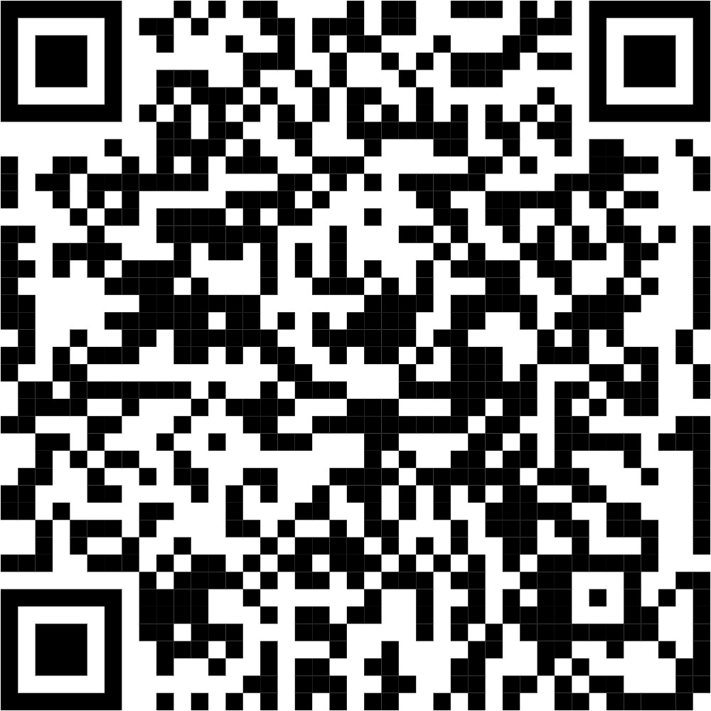

Scan to Tweet

Scan to share with hashtag
#savesoil_kgisledu
X (Twitter) Counter
0
Posts with our hashtag
Our Impact
Each post helps spread awareness about soil conservation. Thank you for supporting the Save Soil movement!
About the Save Soil Movement
The Save Soil movement is a global initiative to address the soil crisis by bringing together people from around the world to advocate for soil health policies. Healthy soil is essential for our food security, climate, and biodiversity.
Why Save Soil?
Soil is the foundation of all terrestrial life and is essential for food production.
Our Mission
To inspire at least 3.5 billion people to support policies that revitalize soil health.
Get Involved
Share our message, join local events, and support sustainable practices.